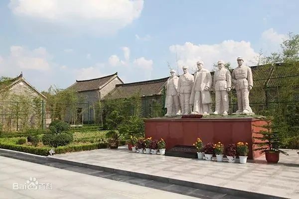

Queshan Zhugou Memorial Hall（因为审核不通过故采用英文）
Zhou inscribed the name of the museum. There are 66 former houses in the museum, 1 Zhugou exhibition hall, 231 classified cultural relics and nearly 1000 other objects, documents and pictures. It was announced as a national key cultural relics protection unit in January 1988.

 见河南，大美确山
见河南，大美确山